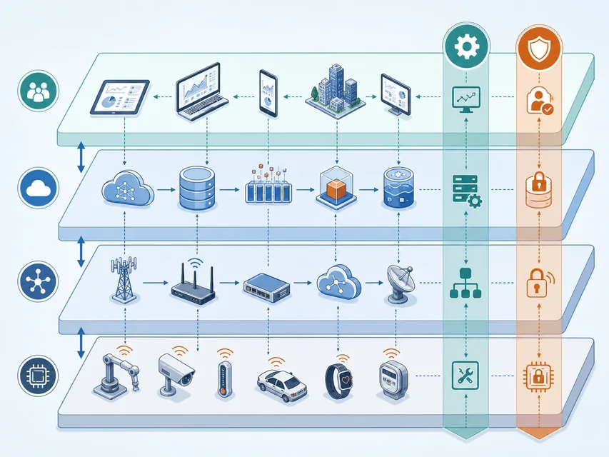
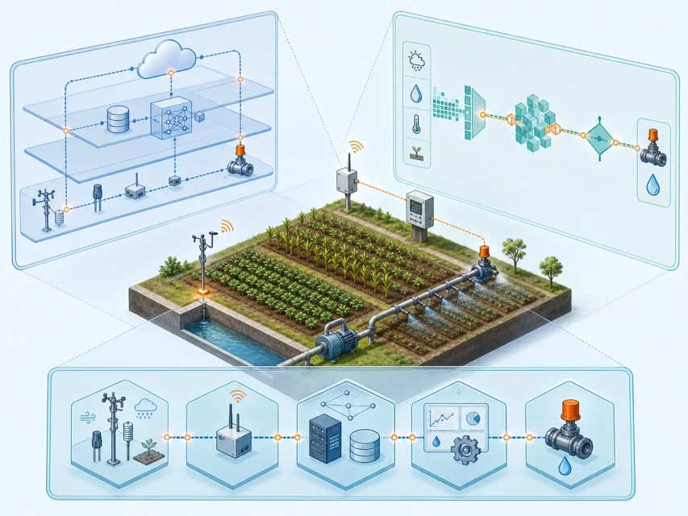

边缘设备
传感器、执行器、标签和控制器
把复杂系统拆成可分析的层、面与功能
 VER. 2608
Built with impress.js
VER. 2608
Built with impress.js
物联网系统可以用组成、映射、模型、功能域和证据逐项分析
角色链说明信息如何进入、流转和反馈，但不是固定部署清单
进入：实体物 → 边缘设备 → 网络／网关 → 平台 → 应用 反馈：应用决策 → 执行设备 → 实体物
传感器、执行器、标签和控制器
连接设备、传输数据并适配协议
提供计算、存储、数据管理和共享
围绕行业目标分析、决策和服务用户
信息系统借助虚拟物表示实体物状态，并把控制决策传给现场设备
01
02
03
04
05
06实体物状态
→ 传感、标识或定位
→ 虚拟物与数据
→ 分析和决策
→ 控制命令
→ 实体物变化实体物、虚拟物和反馈关系比一张设备列表更能说明系统如何工作
| 对象或动作 | 判断世界或方向 | 请写作用关系 |
|---|---|---|
| 田地中的阀门 | 物质世界／信息世界／跨越两侧 | 填写作用关系 |
| 阀门的在线状态 | 物质世界／信息世界／跨越两侧 | 填写作用关系 |
| 虚拟灌溉分区 | 物质世界／信息世界／跨越两侧 | 填写作用关系 |
| 控制命令下发 | 物质世界／信息世界／跨越两侧 | 填写作用关系 |
系统分析要同时标出实体、信息表示和映射方向
链路和接口决定能否通信；数据语义决定能否正确协同
| 角色 | 主要任务 | 需要关注 |
|---|---|---|
| 边缘设备 | 采集、识别、定位或执行 | 物理耦合、功耗、接口和本地状态 |
| 网络（含核心网络） | 组网、寻址、汇聚和传输 | 覆盖、时延、带宽和可靠性 |
| 网关 | 连接异构设备并适配协议 | 转换、缓存、身份和安全 |
| 云与数据平台 | 计算、存储和数据服务 | 规模、数据治理和应用接口 |
“设备在线”只说明某一段连接成立，不等于数据语义和业务链完整
直达、经网络和经网关表示不同连接条件，不分高低
两端有直接链路，数据格式兼容
可以直接通信
两端接口可互通，但没有直达链路
需要网络寻址和转发
两端接口或协议不兼容
需要协议转换或接口适配
先判断接口和语义，再选择链路与网关，而不是只看设备是否亮灯
| 现象 | 请写优先检查对象 | 请写需要的证据 |
|---|---|---|
| 传感器无本地读数 | 填写对象 | 填写证据 |
| 设备有读数但平台无数据 | 填写对象 | 填写证据 |
| 平台有数据但对象错了 | 填写对象 | 填写证据 |
| 命令下发但阀门不动 | 填写对象 | 填写证据 |
沿着设备、连接、标识、语义和执行逐段取证
设备、网络、平台、应用按职责分工；管理与安全跨层贯穿
四层：设备／网络／平台／应用 两面：管理／安全，跨层贯穿
这是职责抽象，不是固定部署顺序或清单；管理面和安全面跨层贯穿

每层代表一组主要职责，不要求一一对应具体设备
边缘设备与通用设备，负责采集、执行、计算和连接
组网、传输、路由和协议适配
提供服务与应用支持，包括数据库、云计算、数据管理和专用支撑
行业业务、用户接口和智能服务
系统各层都要配置、监测和保护
资源发现、系统配置、故障处理、性能监测、计费和生命周期管理
回答系统如何持续运行
身份、授权、机密性、完整性、隐私和审计
回答谁能做什么以及证据如何留存
层说明分工，管理与安全贯穿运行
| 功能 | 请先判断层或面 | 请写判断依据 |
|---|---|---|
| 读取传感器状态 | 填写层或面 | 填写依据 |
| 转换两种协议 | 填写层或面 | 填写依据 |
| 保存历史数据 | 填写层或面 | 填写依据 |
| 认证设备身份 | 填写层或面 | 填写依据 |
先找功能，再判断它位于哪一层以及是否跨层
七层按信息流组织；四组只是阅读分组，不表示部署顺序
与实体物交互，产生数据或执行控制
连通层连接设备；边缘层靠近现场过滤、压缩并快速决策
累积层沉淀动态数据；抽象层统一结构、来源和语义
应用层提供业务服务；协作层跨应用、组织和人员协调任务
周期或事件数据可先在现场处理，位置取决于时延、带宽、隐私和责任
01
02
03
04传感器产生动态数据
→ 边缘过滤、压缩或检测
→ 数据累积并统一结构与语义
→ 应用分析与协作示例信息流可省略、回流或改变处理位置
| 动作 | 请先判断主要层 | 请写判断依据 |
|---|---|---|
| 在摄像头旁检测危险状态 | 填写层 | 填写现场和时延证据 |
| 保存一周的温度记录 | 填写层 | 填写数据状态证据 |
| 把不同厂商字段统一 | 填写层 | 填写结构和语义证据 |
| 让交通、停车和支付系统协同 | 填写层 | 填写跨应用任务证据 |
用数据状态和处理目的判断所在层，设备名称只作线索
功能域可以跨越多个层和接口
获取物理状态并形成可用信息
区分并解析对象身份
确定物在哪里、事件何时发生
把决策作用于现场
连接设备并传输信息
分级处理海量信息
挖掘规律并支持决策
保护系统、数据与用户隐私
负责配置、监测、诊断和生命周期管理
两列不表示层级；九个功能域可以协同并跨越多个层和接口
表中按任务合并显示九个功能域，证据仍要分别核对
| 相关功能域 | 任务中的问题 | 典型证据 |
|---|---|---|
| 感知／标识 | 测到什么，属于哪块田 | 数据、设备身份和时间 |
| 定位与授时 | 位置和先后是否可靠 | 坐标、时钟和事件顺序 |
| 网络／计算 | 信息怎样到达并被处理 | 链路、延迟和处理结果 |
| 数据与智能／执行 | 何时灌溉，怎样作用 | 规则、模型、阀门反馈 |
| 安全与隐私／管理 | 谁能操作，如何发现异常 | 权限、日志、配置和告警 |
面向任务的服务闭环需要多个功能域协同
| 现象 | 请先判断主要功能域，可多选 | 请写需要的证据 |
|---|---|---|
| 设备数据无法区分来源 | 填写功能域 | 填写证据 |
| 数据到达但时间顺序错乱 | 填写功能域 | 填写证据 |
| 平台分析正常但阀门无动作 | 填写功能域 | 填写证据 |
| 未授权设备可以读取数据 | 填写功能域 | 填写证据 |
按功能域拆分故障，逐项核对证据
同一案例可以用三个互补视角分析
看职责分工：各层与跨层面承担什么职责
看信息流转：数据怎样从现场变成业务与协作
看横向能力：哪些功能跨层并连接技术专题
同一系统可用多个视角；三种视角不是三套并列部署架构

同一系统可以用多个视角分析，关键是保持接口和责任一致
| 视角 | 更适合追问 | 典型模型 |
|---|---|---|
| 职责分工 | 各层与跨层面承担什么职责 | ITU-T 四层两面 |
| 信息流转 | 数据怎样从现场变成业务与协作 | IWF 七层 |
| 功能专题 | 哪些功能跨层、如何组织技术体系 | 九个功能域 |
模型是分析工具，不是唯一部署清单
按现象取证；箭头不表示部署层级
01
02
03
04
05现场无变化
→ 检查执行与设备
→ 检查网络与网关
→ 检查平台数据与应用规则
→ 检查权限、配置、监控与审计确认实体物和虚拟物是否对应
确认数据是否沿正确接口流动
确认决策和命令是否拥有权限
确认结果是否改变并回报现场
复杂故障可以拆成分工、接口、功能域和责任四类问题
| 现象 | 请标出已有证据 | 请写还需补充的证据 |
|---|---|---|
| 设备在线 | 填写已有证据 | 填写缺口 |
| 平台有历史数据 | 填写已有证据 | 填写缺口 |
| 控制命令已发送 | 填写已有证据 | 填写缺口 |
| 模型图画完 | 填写已有证据 | 填写缺口 |
模型图只是起点，工程完成还需要可观察的接口和责任证据
按组成、映射、模型、功能域和责任逐项取证